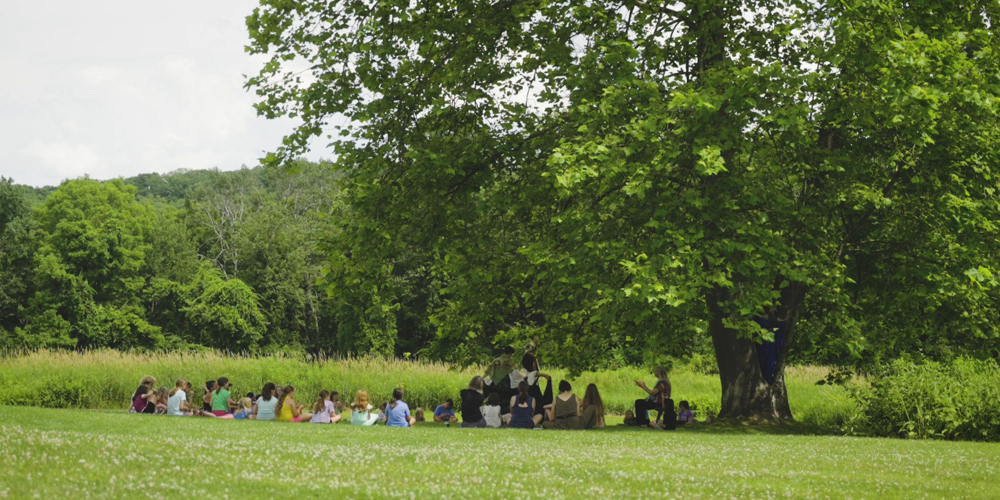

Notes for Parents
We ask all parents of Journey Camp participants read this section before you register and note on the form that you have studied them. Over these three decades we have developed a set of guidelines that make our camps work successfully.

Dear parents,
We want to help each camper feel valued and included. We build a close community involving teamwork between parents and camp staff. We emphasize communication and want all parents to feel welcome as they drop off and pick up. We hope this information will introduce how the camp operates.
Good wishes,Sarah Pirtle
The Journey Camp Friendship Code
At Journey Camp, we all agree to follow the Friendship Code. This helps us create a safe and caring community where everyone feels included.
1. FRIENDLY TALKING
We use friendly words and a kind tone of voice. We avoid teasing, name-calling, or hurtful jokes.
2. TALK IT OUT
When we have a problem with someone, we agree to talk it out instead of fighting or calling names. We will deal with the problem instead of ignoring it, unless it just makes more sense to move on. We will listen to each other with open hearts.
3. TELL SOMEONE
If we have a problem that we can’t solve on our own, we agree to tell a staff member or our parents so we can receive help. We will be careful about what stays private.
4. PLEASE STOP
We agree to use the “stop” rule. If someone is doing something upsetting or unfair, we’ll say “stop” or get help asking them to stop. And if someone asks us to stop, we will stop ourselves and talk more about it.
5. COMPROMISE
We will be ready to listen to the needs of the whole group. If needed, we will compromise for the good of the group.
6. FRESH START
We agree to give people chances, and make a fresh start when possible so that we can all learn and grow together in a safe and helpful way.
7. CIRCLE
We will look out for everyone in the circle and give respect equally.

Six Readiness Questions
• Will your child be able to attend a story circle for half hour each day?
• Will they be able to stay inside the boundaries in the woods and not wander off?
• Will they respond to directions given by teen leaders as well as adult staff?
Will your child definitely refrain from verbal or physical aggression when they are upset? We
need to be sure they won’t hit, shout at or put-down other children.
• Has your child bought into the need for group agreements?
• Will your child be able to walk up the hill and back from the woods each day? We will help
support campers on this hike. (You can visit the site in advance if you aren’t sure).
Please don’t register children for whom the program is not likely to be a good
fit.
Important Notes for Parents
We find that our camp does not work well if children:
• need a lot of one-on-one attention each day
• need a therapeutic program
• prefer being alone and do not feel comfortable in a group
• treat other children verbally or physically aggressively when they are upset.
We work with parents as a team.
Please discuss the Friendship Code with your children as you plan for camp and also right
before camp.
Open Communication
Please inform us openly and honestly about the needs and concerns of your children.
We aim for having the right match – connecting with parents and children who want what we have
to offer.
If we can, we will strategize how to meet their needs. Before camp starts, it’s crucial that we
understand a camper’s specific needs to determine if we can be supportive.
Examples:
• If your child needs help on long hikes, let us talk more to make sure our setting can meet
their needs.
• If your child has a peanut allergy, we will want to inform other families in plenty of
time.
• If a relative, friend or pet has recently died, it helps us to know they are grieving.
• If you have a way you help your child with anger – we would like to learn about it before
camp. We believe that anger brings a message, and want to help children hear themselves as
well as develop constructive communication.
As camp starts, if your child is having trouble following the Friendship Code agreements, we
will let you know as soon as possible and ask you to work with us as a team, guiding them as
they develop these skills.

Camp Fees
Please pay camp fees on time. We appreciate having all forms and fees submitted prior to the
beginning of camp. This allows our staff on the first day of camp to completely focus on
welcoming campers, not administrative details.
Talk to the Director Before Camp
You are welcome to talk on the phone to Sarah and have the day described or talk to her about
individual needs of your child.
Call (413) 625-2355 which is a landline.
What Happens Next?
After confirmation of your registration, later in the spring you will receive:
• A map to camp
• A list of what to bring
• An address list of other families to help with carpools
Payments, Refunds, and Late Payments:
Payments for each camp session are expected according to the schedule described in your registration confirmation letter. The $50 deposit is non-refundable. Up until April 15th, fees paid in addition to deposit are refundable. After April 15th through May 5th, half of fees are refundable. After May 5th, fees are not refundable. However, if there is a camper on the waiting list who can take your slot, your fees will be returned except for the deposit. We have this policy because unexpected cancellations seriously impact our budget. During the camp session, if a child has to be asked to leave camp, no funds can be returned. This is why we urge parents to study our description of camp and describe the social needs and skills of their child as honestly as possible. A $10 surcharge will be added to any payment made on the first day of camp. A $15 surcharge will be added to any payment made later than the first day of camp. Please understand that every late payment generates additional administrative costs.